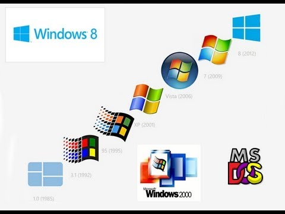

This course focuses on Microsoft operating systems. Students learn the components of an operating system and learn to interact with
a PC using a variety of Microsoft products. Additionally, students learn to customize and manage an operating system as well as
solve software-level difficulties.
| Business Communcations |
| Index |
| Term 1 |
| Term 2 |
| Term 3 |
| Term 4 |
| Term 5 |
| Term 6 |
| Term 7 |
| Term 8 |